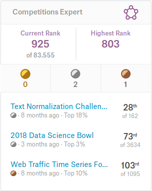
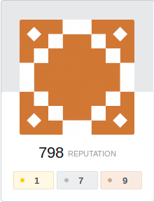

Alex Glinsky
Summary
Data Scientist and Computer Vision engineer with strong math background and 2 years of experience using deep learning algorithms, data processing, and data mining algorithms to solve challenging healthcare problems. Also familiar with classic Computer Vision algorithms and experienced in integrating deep learning models to production software, such as web or desktop application.
Education
2011-2016
Belarusian State University of Informatics and Radioelectronics
Bachelor degree
Вычислительные машины, системы и сети
2016-2018
Belarusian State University of Informatics and Radioelectronics
Master degree
Технологии виртуализации и облачных вычислений
In 2017 I completed Open Machine Learning Course in Top-12 among more than 500 participants, mostly thanks to the first place in the final ML competition Catch Me If You Can: Intruder Detection through Webpage Session Tracking.
Experience
Computer Scientist / Researcher
October 2011 - present
Belarusian State Medical University
- Developing and implementing Computer Vision alghoritms for medical apps
- Building desktop applications with Python/JavaScript/C++
- Building web-apps/websites with Python/Javascript
- Collecting/Analyzing/Preparing/Cleaning data for Computer Vision alghoritms
Skills
- Fluent Python
- Good knowledge of modern Javascript (es6)
- Slight knowledge of C++
- Good knowledge of Machine Learning and related libraries:
- Good knowledge of SciPy stack: Numpy / Scikit-learn / SciPy / Matplotlib / Pandas
- Experienced in using different NLP libraries gensim / pymorphy2 / nltk
- Experienced in using modern gradient boosting based libraries: XGBoost / LightGBM / CatBoost
- Experienced in Computer Vision and related libraries:
- OpenCV / Scikit-image / Pillow / imgaug
- Deep Learning
- Good knowlegde of Tensorflow / Keras / PyTorch
- Familiar with CNTK / MxNet
- Web frameworks / Frontend / Backend
- Flask / SQLAlchemy
- Jquery / Math.js / Webpack / Node.js / Bootstrap
Activities
In 2017 I was taking part in Эвотор Data Challenge on boosters platform and took the 3rd place. The first place was taken by Dmitry Ulyanov, who created a well-known application Prisma.
tr
Later, same year, as a member of team Laine Assist I took the 3rd place in
I am also a big fan of Kaggle competitions, and I have reached top-1000 among 83.5k users:
And i have an active Profile on StackOverflow:
And, finally, I like to solve difficult programming tasks on Codewars: